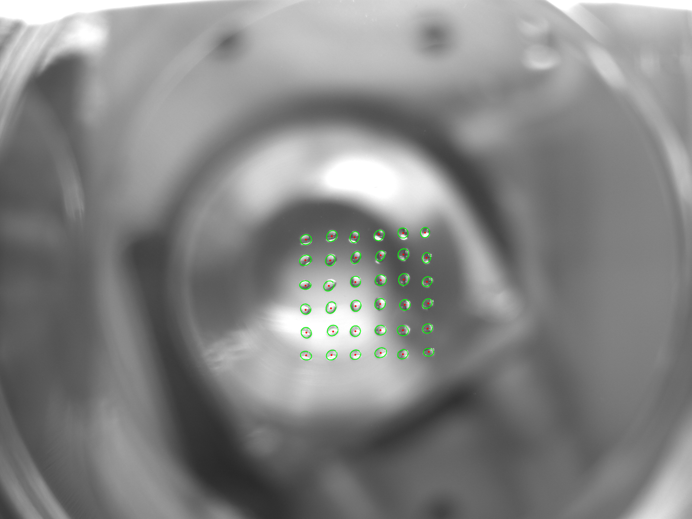
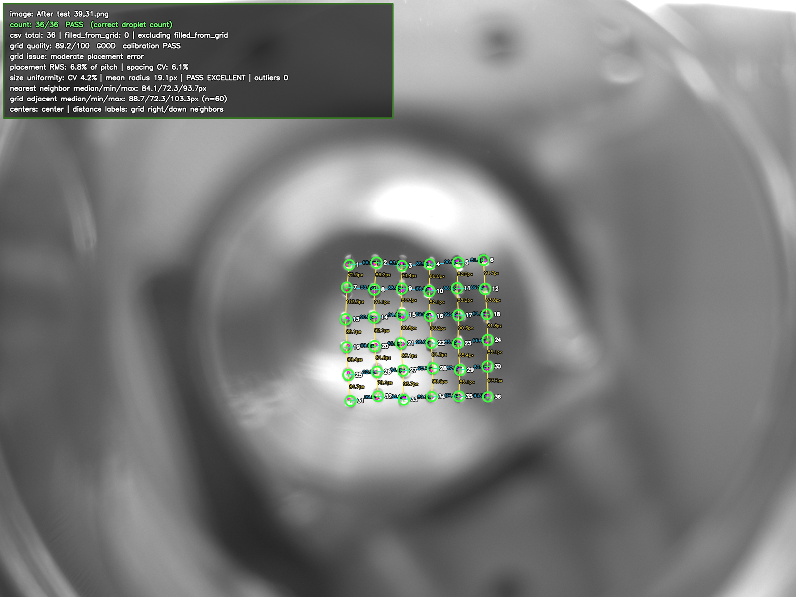

Building the computer-vision system that drives an acoustic droplet-ejection bioprinter and turns every print into labeled data for training machine-learning models of print quality.

Detector output: each ejected droplet in the grid is located, indexed, and centroid-marked.
Acoustic droplet ejection (ADE) prints cell-laden bio-ink by firing focused ultrasound pulses that launch individual droplets onto a substrate. My work was the vision system around it: software that reads each print from the printer's camera, feeds that back to drive the print process, and turns every run into labeled data for training machine-learning models that predict and improve print quality.
The detector uses a classical CV pipeline (CLAHE local-contrast normalization, background removal, and a fusion of small-blob, morphological, Laplacian-of-Gaussian, and Hough-circle responses), then filters candidates by radius, circularity, contrast, and position before fitting them against the expected grid. A configurable detector handles arbitrary grids and ROIs, while a fixed 6×6 calibration detector feeds the automated QA suite.
Every detected print is scored into a set of metrics that serve two purposes: they gate the print and inform the next command to the printer, and they become the labels attached to each image when building the training set for the ML models. The per-print metrics include:

A scored print: 36/36 droplets detected, grid-quality and spacing metrics, and per-droplet labels overlaid on the camera image.
To make the system usable on a shared lab machine, I wrote a local bioprinter-to-laptop transfer inbox (web UI + API) that automatically runs the full calibration and QA workflow whenever new run images arrive. I also built OPBOX ultrasound telemetry tooling: a standard-library wrapper that launches the unmodified OPBOX GUI and records peak position and amplitude to CSV, plus an ADS-based watcher for live PLC peak data, all offline, with no extra drivers.
A separate Arduino MAX6675 thermocouple firmware and live serial plotter logged bio-ink temperature during prints, and an extraction tool parsed OPBOX documentation and G-code into structured CSV/JSON to map controller parameters to dashboard values.
End-to-end pipeline from raw print image to quantitative QA report
Offline OPBOX peak logging with zero changes to existing lab software
Reproducible research records with a documented test plan
Institution: RWTH Aachen University
Field: Acoustic droplet bioprinting
Term: Summer 2026
Role: Research: computer vision, control & ML